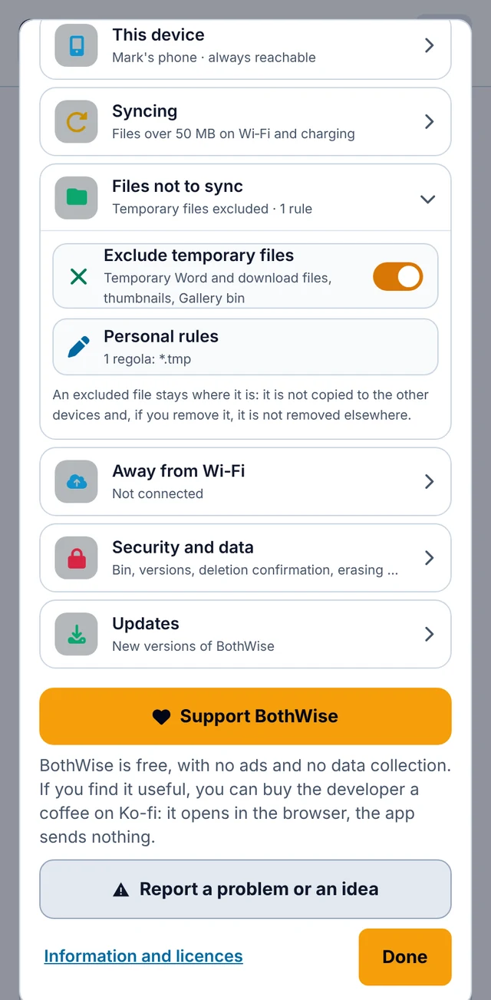
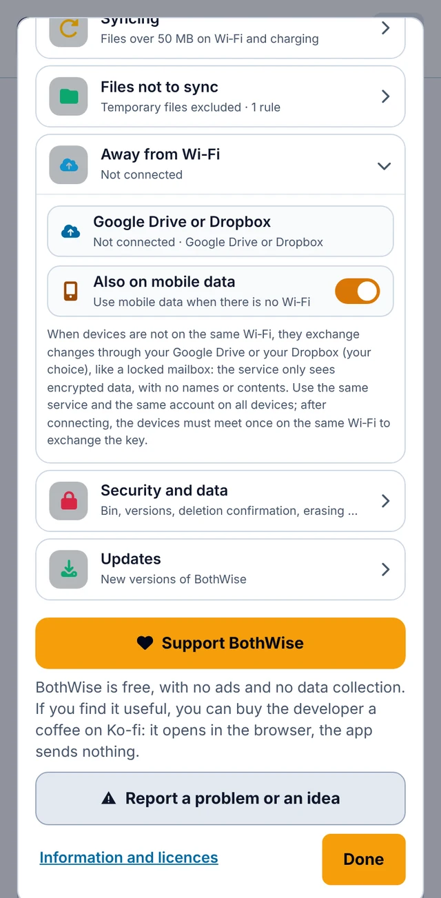
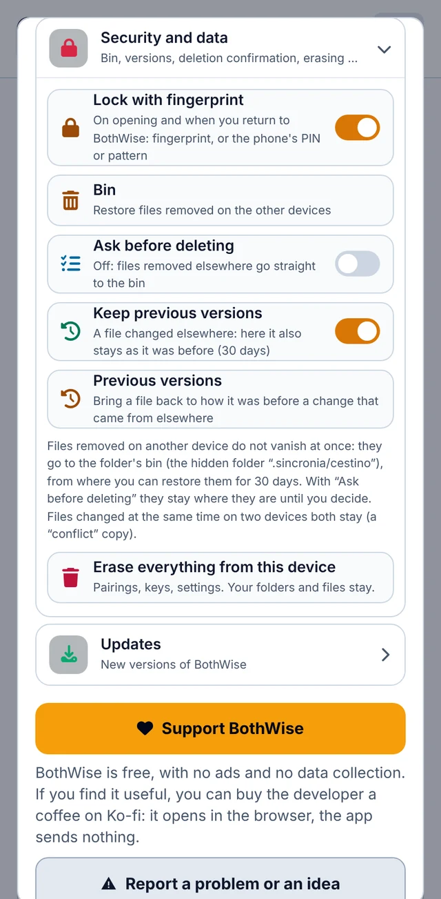

BothWise
Your folders, the same on all your devices.
Files go straight from one device to another, encrypted, with no cloud and no account. Even from afar, through your own Google Drive or Dropbox.
- Free
- Open source
- No account
- Works offline
- Android 10+



What it does
Device to device
On the same Wi‑Fi, files travel directly between your phones and tablets over an encrypted link. No server in between.On the same Wi‑Fi, files travel directly between your phones and tablets over an encrypted link.
Away from home too
Off your Wi‑Fi you can sync through your own Google Drive or Dropbox. Only encrypted files reach the cloud.Off your Wi‑Fi you can sync through your own Google Drive or Dropbox.
You never lose a file
Recycle bin and previous versions for 30 days. If two devices change the same file, you choose what to keep: nothing is deleted.Recycle bin and previous versions for 30 days.
Automatic safeguards
The app stops and warns you before mass deletions, vanished folders or suspicious changes.The app stops and warns you before mass deletions, vanished folders or suspicious changes.
Manage folders in the app
Browse, open, rename, move, delete, add and share files without leaving BothWise.Browse, open, rename, move, delete, add and share files without leaving BothWise.
Send a file to one device
Send a single file to a specific device, AirDrop-style, with a confirmation request for the receiver.Send a single file to a specific device, AirDrop-style, with a confirmation request for the receiver.
Schedules and speed limit
Choose when to sync and how much bandwidth to use, so your network is never bogged down.Choose when to sync and how much bandwidth to use, so your network is never bogged down.
Fingerprint lock
Open the app only with your fingerprint or screen lock.Open the app only with your fingerprint or screen lock.
Italian and English
Built-in guide and tutorial, in two languages.Built-in guide and tutorial, in two languages.
See how it works
Short clips, no sound.
Pairing devices
Syncing
Never lose a file
Getting started
- InstallDownload BothWise on every device you want to link.
- PairShow the QR on one device and scan it with the other (or type the code).
- Pick foldersChoose what to sync. From then on your folders stay identical.
Frequently asked questions
Do I need internet?
No: on the same Wi‑Fi devices find each other on their own. You only need internet to sync from afar through Drive or Dropbox.
Who can see my files?
Only the devices you paired yourself. On the cloud, if you use it, files are encrypted and unreadable to the provider.
How much does it cost?
Nothing. The apps are free, with no ads and no purchases. If they help you, you can buy us a coffee at ko-fi.com/crslabs.
Where does my data go?
It stays on your device. CrsLabs runs no servers and collects nothing. Details are in the privacy policy.
How do I install and update it?
Download the file from the Releases page on GitHub and open it: Android will ask you to allow installing from that source. Later updates are offered inside the app and install over the old version, without losing data.
Something is wrong, or I have an idea.
Write to crslabs.info@gmail.com or use "Report a problem or idea" inside the app.